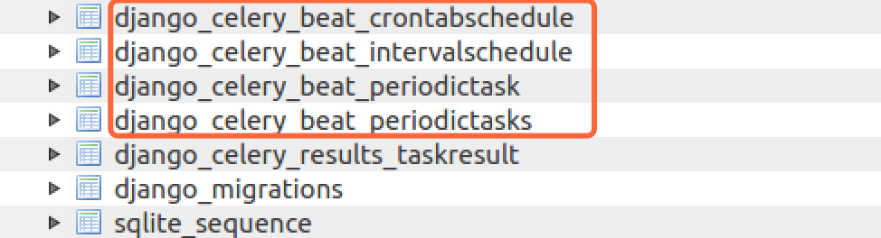
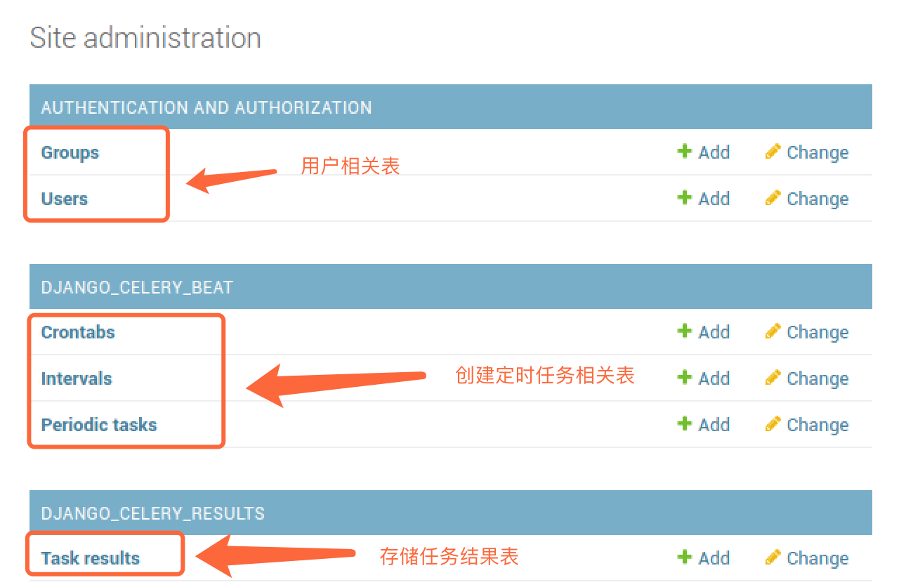
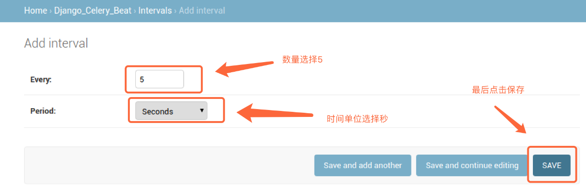
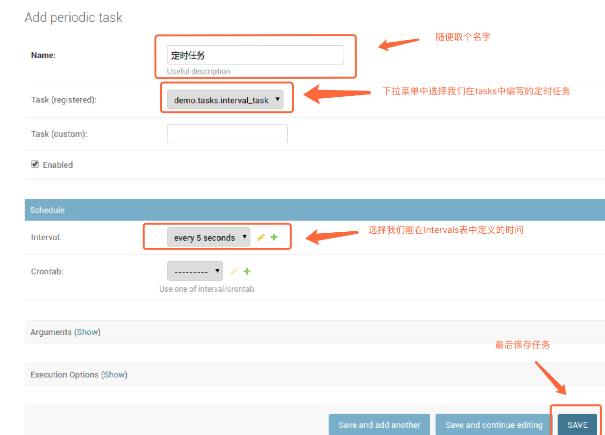
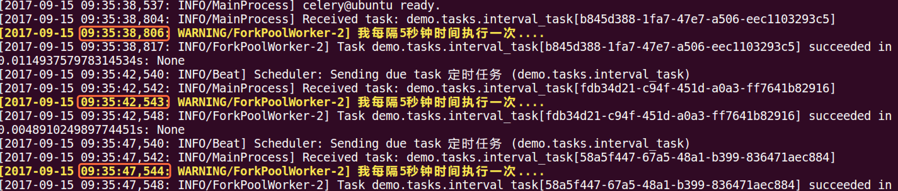

3. 定时任务
如果我们想某日某时执行某个任务，或者每隔一段时间执行某个任务，也可以使用celery来完成. 使用定时任务，需要安装额外包:
pip install django_celery_beat
首先在settings.py中安装此应用:
INSTALLED_APPS = [
'django.contrib.admin',
'django.contrib.auth',
'django.contrib.contenttypes',
'django.contrib.sessions',
'django.contrib.messages',
'django.contrib.staticfiles',
'demo',
'django_celery_results',
'django_celery_beat', # 安装应用
]
在celery_demo/celery.py模块中增加定时任务配置:
from celery import Celery
from django.conf import settings
import os
# 为celery设置环境变量
os.environ.setdefault('DJANGO_SETTINGS_MODULE', 'celery_demo.settings')
# 创建应用
app = Celery("demo")
# 配置应用
app.conf.update(
# 配置broker, 这里我们用redis作为broker
BROKER_URL='redis://:332572@127.0.0.1:6379/1',
# 使用项目数据库存储任务执行结果
CELERY_RESULT_BACKEND='django-db',
# 配置定时器模块，定时器信息存储在数据库中
CELERYBEAT_SCHEDULER='django_celery_beat.schedulers.DatabaseScheduler',
)
# 设置app自动加载任务
# 从已经安装的app中查找任务
app.autodiscover_tasks(settings.INSTALLED_APPS)
由于定时器信息存储在数据库中，我们需要先生成对应表, 对diango_celery_beat执行迁移操作，创建对应表:
python manage.py migrate django_celery_beat

我们可登录网站后台Admin去创建对应任务, 首先我们先在tasks.py模块中增加新的任务，用于定时去执行(5秒执行一次)
from celery_demo.celery import app
import time
# 用于定时执行的任务
@app.task
def interval_task():
print("我每隔5秒钟时间执行一次....")
首先创建后台管理员帐号:
python manage.py createsuperuser
登录管理后台Admin:

其中Crontabs用于定时某个具体时间执行某个任务的时间，Intervals用于每隔多久执行任务的事件，具体任务的执行在Periodic tasks表中创建。
我们要创建每隔5秒执行某个任务，所以在Intervals表名后面点击Add按钮:

然后在Periodic tasks表名后面，点击Add按钮，添加任务:

启动定时任务：
celery -A celery_demo worker -l info --beat

任务每隔5秒中就会执行一次，如果配置了存储，那么每次任务执行的结果也会被保存到对应的数据库中。